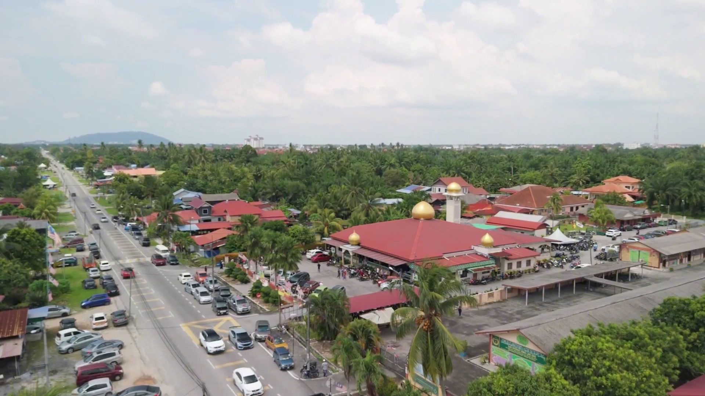

Masjid Kampung
Sungai Lang Baru
Pusat ibadah, ukhuwah, dakwah, ilmu dan ekonomi ummah.
Pengisian Ilmu di Masjid Setiap Hari
Mudah, telus, di hujung jari
Infaq & Sumbangan
Sumbangan ikhlas terus ke akaun masjid. Pembangunan, kebajikan, anak yatim, khairat & sedekah Jumaat.
Mula berinfaqWaktu Solat
Jadual waktu solat harian untuk zon Kuala Langat (SGR03), dikemas kini automatik setiap hari.
Lihat jadual penuhKhairat Kematian
Keahlian khairat kematian kariah — daftar ahli baru atau semak & jelaskan yuran tahunan melalui portal rasmi masjid.
Portal e-Khairat · e-khairat.comSebuah amanah, sejak 1975
"Pusat setempat bagi ibadah, ukhuwwah, dakwah, kekuatan, ilmu dan ekonomi."
Objektif kami: menjadikan Masjid Kampung Sungai Lang Baru sebuah masjid berasaskan disiplin yang tinggi ke arah taqwa, mengembalikan fungsi sebenar masjid dan menjadi mercu syiar keagungan Islam.
Sejarah Ringkas
Pada asalnya, masjid ini dinamakan Masjid Ar-Rohmaniah, bersempena nama Allahyarham Tuan Haji Abdul Rahman dan ahli keluarga beliau yang merupakan penduduk tempatan. Sekitar tahun 1975, beliau membeli tanah seluas lebih kurang 2 ekar di atas Lot 2949, Jalan Besar, Kampung Sungai Lang Baru, dan mewakafkannya untuk membina sebuah masjid bagi keperluan ibadah dan kegiatan kemasyarakatan penduduk kampung.
Pada tahun 1985, nama masjid dipersetujui sebulat suara oleh Ahli Jawatankuasa Masjid dan diluluskan oleh Jabatan Agama Islam Selangor. Nama "Ar-Rohmaniah" berasal daripada salah satu nama Allah S.W.T., iaitu Ar-Rahman, daripada suku kata "ra ha ma" yang bermaksud penyayang. Nama ini diabadikan untuk menerapkan nilai kasih sayang sesama ahli kariah dan menambah rasa syukur kepada-Nya.
Masjid ini turut menjadi landasan membina ukhuwah Islamiyah, terletak tidak jauh dari Pekan Banting yang menjadi tumpuan penduduk setempat.